Electrical Engineering - Theory
Introduction to Electrical Engineering
Electric charges in motion
The basic problem
We have a collection of source charges (static or moving) and we want to know what force results on an additional test charge.
The source charges are:
- static (no motion) -> Elektrostatics
- in uniform motion -> Current, Magnetostatics
- accelerated -> Electromagnetic Waves
Static vs. in motion
- Static charges produce a static electric field.
- Constantly moving charges produce a static magnetic field.
What do we know about electric charges?
- 2 types: positive and negative (Ben Franklin - 1747)
- they are quantized (see Millikan Experiment), elementary charge: \(e=1.6\cdot10^{-19}C\) (Electron: -e Positron: e)
Forces on electric charges
Current in a static magnetic field.
Lorentz force law $$\bbox[10px,#073642,border: 1px solid white]{\vec{F} = \vec{F_e} + \vec{F_m} = q(\vec{E}+\vec{v}\times\vec{B})}$$
Line current: $\vec{I} = $ $\vec{F_m} = $
Notes:
- The magnetic force does no work.
This is due to the fact that the direction of the force \(\vec{F_m}\) is perpendicular to the motion \(\vec{v}\).
Fields
- conservative vector field
- path independence
- irrotational vector fields (curl is 0) (wirbelfrei)
- solenoidal vector fields (div is 0) (quellenfrei)
Elektrische Strömungsfelder
Normally the negative charges move.
Änderungen der Ladungsverteilung, aber nicht ihrer Felder
The Magnetic Field
Alternating current
Elektromagnetische Energieumformer
Electrostatics
All source charges are fixed. The test charge is fixed or moving. Note that in the static case the electric and magnetic fields are not coupled, so the electrostatic and the magnetostatic fields can be treated separately.
Electric Charges
Triboelectric charging (Reibungselektrizität):
(Lichtenberg 1777)
- Glass rod rubbed with silk - positive
- Plastic rod rubbed with fur - negative
Protons and electrons have the same elementary charge with different signs (+e and -e).
\(e=1.6 \cdot 10^-19\ C\)
Millikan showed in 1909 with his famous oil drop experiment that all amounts of charge appearing in nature are integer multiples of e.
The conservation of charge in an isolated system is a fundamental law of nature. Charged particles can be created and destroyed but the total amount of charge must stay the same. E.g. if an electron is created, at the same time a positron is created. Although the total amount of charge in the universe is constant, it's value is not known (might be 0). Creation and destruction of charges is rare, normally they just move around. Electrical Enginieering is basically about how charges move around and what happens because of that.
Coulomb's law
Force between two electric charges. $$\bbox[10px,#073642,border: 1px solid white]{\vec{F}= \frac{1}{4\pi\epsilon_0} \frac{q_1 \cdot q_0}{r^2}\vec e_r}$$

- \(F = k_e \frac{q_0 \cdot q_1}{r^2}\) (scalar form)
- \(\vec e_r\) is a unit vector of length 1 between \(q_0\) and \(q_1\)
Dividing by \(q_0\) we get an expression that is only dependent on the target charge:
- \(\vec{E} = \frac{\vec{F}}{q_1}\) in \(\frac{V}{m}\) (Definition)
- Coulomb's constant: \(k_e \approx 9\cdot 10^9 \frac{N \cdot m^2}{C^{2}} = \frac{1}{4 \cdot \pi \cdot \epsilon_0}\)
- Permitivity of free space: \(\epsilon_0 = 8.85 \cdot 10^{-12}\frac{C^2}{N \cdot m^2}\)
- Note that the principle of superposition holds.
Electric Field Strength
From Coulombs Law we get the definition of the Electric Field Strength (in \(\frac{V}{m}\)): $$\bbox[10px,#073642,border: 1px solid white]{\vec{E} = \frac{\vec{F}}{q}}$$
This is the force on a charge with 1 Coulomb. We can characterize the field produced by the source charges independent of the target charge.
Let's think about it this way:
We put a test charge at an interesting point in the field and measure the force on this
charge. Then we divide the force by the charge value and get the electric field strength
in this point.
Note:
One could think that to get the total field we need to add the field of the test charge but
we have to note, that for the force on the test charge it's own electric field is irrelevant.
Only when we add a 3rd charge we need to consider it.
Field lines:
Lines tangent to the Field vectors. The density of the field lines is proportional
to the field strength (the higher the field strength the more lines we have in
a given space).
$$\bbox[10px,#073642,border: 1px solid white]{\vec{F} = Q \cdot \vec{E}}$$
\[dW = \vec{F} \cdot \vec{dl} = Q \cdot \vec{E} \cdot \vec{dl}\]
Integrate:
\[\displaystyle W = Q \cdot \int_{a}^{b} \vec{E} \cdot \vec{dl}\]
\[\displaystyle U_{ab} = \frac{W}{Q} = \int_{a}^{b} \vec{E} \cdot \vec{dl}\]
Electric flux
$$\bbox[10px,#073642,border: 1px solid white]{\Phi_E = \iint_{A}^{} \vec{E} \cdot \vec{df}}$$
Useful for calculating the electric field.
Example: Point Charge Q
Calculate the flux of a point charge.
\[\vec{E} = \frac{\vec{F}}{q} = \frac{1}{4 \pi \epsilon_0} \frac{Q}{r^2} \hat{r}\]
Electric Flux: Surface is a sphere with radius \(R\), surface vectors are parallel to the field.
\[\Phi_E = \iint_{A}^{} \vec{E} \cdot \vec{df} = \lim_{}\sum_{A}\vec{E} \cdot \vec{\Delta f}\]
\(\vec{E}\) and \(\vec{\Delta f}\) are parallel, so we get
\[\Phi_E = E \cdot lim \sum_{A} \Delta f = \frac{1}{4 \pi \epsilon_0} \cdot \frac{Q}{R^2} \cdot 4 \pi R^2 = \frac{Q}{\epsilon_0}\] (independent of the Radius!)
Note:
- This result can be generalized for arbitrary closed surfaces and enclosed charge densities.
Gauss's Law
(Don't confuse with Gauss's Theorem.)
$$\bbox[10px,#073642,border: 1px solid white]{\Phi_E = \frac{Q}{\epsilon_0}}$$
- Q is the total charge inside a closed surface.
- The electric flux is going through this surface.
Charge Distributions, charge density \(\rho = \frac{\Delta Q}{\Delta v}\)
The total charge is \[Q = \iiint_{V} \rho \cdot dv\]
\[\Phi_E = \frac{Q}{\epsilon_0} = \iiint_{V} \frac{\rho}{\epsilon_0} \cdot dv\]
from the Definition we get (with closed surface) using Gauss's Theorem:
\[\Phi_E = \oint_{Rd(V)} \vec{E} \cdot \vec{df} = \int_{V} div(\vec{E}) \cdot dv\]
\[\int_{V} \vec{E} \cdot dv = \int_{V} \frac{\rho}{\epsilon_0} \cdot dv\]
from this we get the 1st Maxwell Equation:
$$\bbox[10px,#073642,border: 1px solid white]{div(\vec{E}) =\frac{\rho}{\epsilon_0}}$$
What is the divergence?
Using Gauss's Theorem \[\oint_{Rd(V)} \vec{E} \cdot \vec{df} = \int_{\Delta V} div(\vec{E}) \cdot dv\]
We look at a small Volume \(\Delta V\), where the electric field is approximately constant. Then we get
\[\int_{\Delta V} div(\vec{E}) \cdot dv = div(\vec{E}) \int_{\Delta V} dv = div(\vec{E}) \cdot \Delta V\]
\[\oint_{Rd(V)} \vec{E} \cdot \vec{df} = div(\vec{E}) \cdot \Delta V\]
$$\bbox[10px,#073642,border: 1px solid white]{div(\vec{E}) = \frac{1}{\Delta V} \oint_{Rd(V)} \vec{E} \cdot \vec{df}}$$
The divergence inside a small \(\Delta V\) is the electric Flux through the surrounding surface divided by the volume. Now we make the volume smaller and the limit is the divergence.
The divergence is the limit of the flux density on a closed surface. The first Maxwell equation states that the outward electric flux from a point is equal to the charge density at that point.
Lets talk about potential energy
What is the potential energy of a test charge q in an electric field?
In order to have potential energy we need a conservative force field. This is the case in Electrostatics (in general not).
For a conservative electric field we have: Work needed to move a charge from point \(p\) to a fixed reference point \(p_0\).
\[V(p) = \int_{p}^{p_0} \vec F \cdot \vec{dr} = - \int_{p_0}^{p} \vec F \cdot \vec{dr}\]
with the field of a point charge Q:
\[V(p) = - \int_{\infty}^{R} \frac{1}{4 \pi \epsilon_0} \frac{Qq}{r^2} dr\]
- We choose the reference point to be infinitely distant (we cannot choose it to be at the location of Q due to the division by 0).
- \(R\) distance from Q
\[V(R) = \frac{1}{4 \pi \epsilon_0} \frac{Qq}{R}\]
- charges with same sign: 1/R, starting with infinity ending with 0
- charges with opposite sign: -1/R, starting with minus infinity
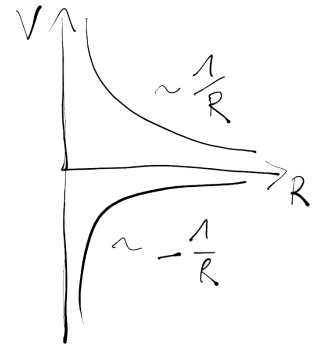
Electric Voltage and Electric Potential
Let's consider two points in an electric field. The voltage is the work needed to move a charge from one point to another divided by that charge.
\[U_{12} = \frac{1}{q} \int_{p_1}^{p_2} \vec F \cdot \vec{dr} = \int_{p_1}^{p_2} \frac{\vec F}{q} \cdot \vec{dr}\]
$$\bbox[10px,#073642,border: 1px solid white]{U_{12} = \int_{p_1}^{p_2} \vec E \cdot \vec{dr} = \frac{W}{q}}$$
Let's say it again: The electric voltage is a measure for the work needed to move a charge in an electric field.
Note: The field strength is the force per charge, the voltage is the work per charge. So now we also divide the Potential Energy form above by the charge and get the Electric Potential.
Electric Potential
Potential Energy divided by charge:
$$\bbox[10px,#073642,border: 1px solid white]{\phi(p) = \int_{p}^{p_0} \vec E \cdot \vec{dr}}$$
If the field is conservative the integral does not depend on the path between \(p_1\) and \(p_2\) but only on the end points. So we can also go via the reference point \(p_0\):
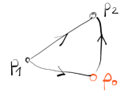
\[U_{12} = \int_{p_1}^{p_0} \vec E \cdot \vec{dr} + \int_{p_0}^{p_2} \vec E \cdot \vec{dr} = \phi(p_1) - \phi(p_2)\]
The voltage is the difference between the potential in the points \(p_1\) and \(p_2\):
$$\bbox[10px,#073642,border: 1px solid white]{U_{12} = \phi(p_1) - \phi(p_2)}$$
\[[ U ] = \frac{J}{C} = V = \frac{Ws}{As}\]
This only holds in a conservative electric field! E.g. when the voltage is induced (closed loop) it cannot be seen as a potential difference (no potential energy in a vortex field).
Connection between potential \(\phi\) and \(\vec E\)
from Mechanics:
\[\vec F = -grad(V)\]
$$\bbox[10px,#073642,border: 1px solid white]{\vec E = -grad(\phi)}$$
\[[E] = \frac{N}{C} = \frac{V}{m}\]
\[grad(\phi) = \begin{pmatrix} \partial \phi/\partial x\\ \partial \phi/\partial y\\ \partial \phi/\partial z\\ \end{pmatrix}\]
The potential \(\phi\) depends on the reference point, but the gradient doesn't. So the reference point can be chosen at will.
Notes:
- The potential in an conducting material is constant otherwise the charges would redistribute.
Example: Point Charge Q
The potential energy was: \(V(R) = \frac{1}{4 \pi \epsilon_0} \frac{Qq}{r}\)
So we get (reference point at infinity):
\[\phi = \frac{1}{4 \pi \epsilon_0} \frac{Q}{r}\]
\[U_{12} = \frac{Q}{4 \pi \epsilon_0} \left ( \frac{1}{R_1} - \frac{1}{R_2} \right )\]
Now we can solve Maxwells equation
Lets put \(\vec E = -grad(\phi)\) into ME:
\[div(\vec E) = \frac{\rho}{\epsilon_0}\]
\[-div (grad (\phi)) = \frac{\rho}{\epsilon_0}\]
\[div(\vec E) = \frac{\partial E_x}{\partial x} + \frac{\partial E_y}{\partial y} + \frac{\partial E_z}{\partial z}\]
\[div(grad(\phi)) = \Delta \phi\]
With the Laplace Operator defined as: \[\Delta \phi = \frac{\partial^2 \phi}{\partial x^2} + \frac{\partial^2 \phi}{\partial y^2} + \frac{\partial^2 \phi}{\partial z^2}\]
we get the Poisson Equation
$$\bbox[10px,#073642,border: 1px solid white]{\Delta \phi = - \frac{\rho}{\epsilon_0}}$$
Again: this only works in a conservative field.
With given charge density we can calculate the potential and then get the electric field.
Without charges we get the Laplace Equation $$\bbox[10px,#073642,border: 1px solid white]{\Delta \phi = 0}$$
Those two equations are the basic equations of Electrostatics.
Influence (Electrostatic Induction)
Charges in a conductor can be redistributed with an external charged body.
Let's say we introduce two metal plates inside a capacitor with an electric Field E. Then the charges in the plates will move to the surface (no field between the plates!). When the two plates are separated the will stay charged even when the outer Field is removed.
Faradays Cage
Consider a conducting closed surface with a constant potential. Inside the surface there is no field. This is
also true when there is an external field because the charges in the conductor will
redistribute so that the external field is compensated inside the
surface.
Capacitor
Store charges.
2 Electrods: +Q, -Q
Parallel-plate Capacitor (Plattenkondensator)
One of 2 metal plates is connected with the positive side of a voltage source. The other metal plate is grounded, i.e. positive charges resulting from influcnec are sucked away towards ground.
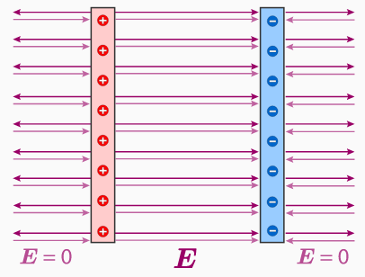
So we have a positively and a negatively charged plate. The resulting fields compensate on the outside and add up on the inside of the plates.
There is connection between charge on the plates and the electric field: \[Q \sim |\vec E| \sim U\]
We define
| \(Q = C \cdot U\) |
Examples
Gauss's Law
\[\Phi_E = \frac{Q}{\epsilon_0} = \int_{A} \vec E \cdot \vec{df}\]
Poisson Equation
\[\Delta \phi = - \frac{\rho}{\epsilon_0}\]
Note: The minus comes from the Gradient.
Laplace Equation (If there is no charge)
\[\Delta \phi = 0\]
Important Theorem If the baundary conditions on a closed surface are given then the solution of the Poisson Equation inside the closed surface is unique.
Charged conducting hollow sphere
Charge Q, Radius R
a) Field Outside r > R
Note: \(\vec E\) and \(\vec{df}\) are parallel.
\[\oint_{A} \vec E \cdot \vec{df} = 4 \pi r^2 |\vec E| = \frac{Q}{\epsilon_0}\]
\[|\vec E| = \frac{Q}{4 \pi \epsilon_ß} \cdot \frac{1}{e^2}\]
Thus we get the same field as for a point charge.
What's the potential like?
\[\phi(r) = - \int_{\infty}^{r} \frac{Q}{4 \pi \epsilon_0} \frac{1}{r'^2} dr'\]
\[\phi(r) = \frac{Q}{4 \pi \epsilon_0} \frac{1}{r}\]
Note: The reference point is put to infinity.
\[|\vec E| = \frac{\phi}{r}\]
When the potential is fixed (e.g. Ground) the Field Strength only depends on r getting bigger with smaller r (see lightning rod, sucks away ions from the surrounding athmosphere).
b) Field Inside r < R
Inside the sphere there is no charge, i.e. the Laplace Equation applies.
\[\Delta \phi = 0\]
The charges sphere itself is an equipotential surface, i.e. we have the sampe potential everywher on the sphere (\(\phi = const\)).
Inside the sphere we have therefore only one unique solution (see Theorem above).
One possible solution of the Laplace Equation inside the sphere is \(\phi = const\). Together with the Theorem we get the solution for r < R.
\[\vec E = -grad(\phi) = 0\]
So there is no electric field inside the sphere (Faraday Cage).
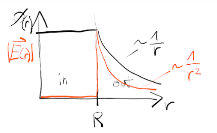
Infinitly long conducting hollow cylinder
Models a coaxial cable.
Charge per Length = \(\lambda\), Radius R
a) Outside
The flux through the cylinder surface for some l is
\[\Phi_E = \oint_{A} \vec E \cdot \vec{dl} = 2 \pi r \cdot l \cdot |\vec E|\]
Using Gauss's Law
\[ \Phi_E = \frac{Q}{\epsilon_0} = \frac{\lambda \cdot l}{\epsilon_0}\]
Combining the two we get
\[ |\vec E| = \frac{\lambda}{2 \pi \epsilon_0} \cdot \frac{1}{r}\]
And the potential
\[\phi(r) = - \int_{R}^{r} \frac{\lambda}{2 \pi \epsilon_0} \cdot \frac{1}{r'} dr' = - \frac{\lambda}{2 \pi \epsilon_0} ln\frac{r}{R}\]
Note: the reference point is not infinitly far away but on the cylinder surface.
b) Inside
no charge inside, \(\phi = const\) is the solution for the Laplace Equation (same as whith the hollow sphere), and again
\[|\vec E| = 0\]
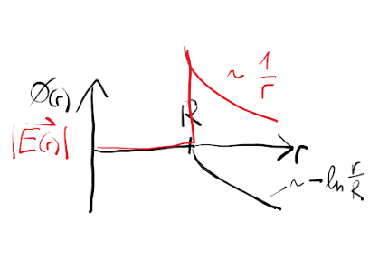
Mathematics
We assume 3D-euclidian space for all vectors.
Component Form of a vector: \(\vec{a}=a_x\vec{e_x}+a_y\vec{e_y}+a_z\vec{e_z}\)
Displacement vector: \(\vec{dl}=dx\vec{e_x}+dy\vec{e_y}+dz\vec{e_z}\) from \((x,y,z)\) to \((x+dx, y+dy, z+dz)\).
Dot Product (Scalar Product)
Algebraic Definition (AD): \(\vec{a}\cdot\vec{b}=a_xb_x+a_yb_y+a_zb_z\)
Geometric Definition (GD): \(\vec{a}\cdot\vec{b}=\left| a \right|\left| b \right|cos(\theta)\)
Projections: \(\vec{a}\cdot\vec{b}=\left| a \right|\left| b_a \right|\)
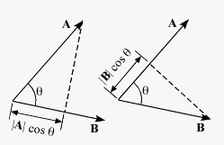
Applications:
- Compute lengths and angles.
- Detect orthogonality.
Notes:
- The origin of the vectors doesn't change the dot product, we can move them around as we like.
- For perpendicular vectors the dot product is 0.
- \(\vec a \cdot \vec a = |\vec a|^2\)
- The equivalency of AD and GD can be proven using the law of cosines:
\(|\vec c|^2 = |\vec a|^2 + |\vec b|^2 - 2 \cdot |\vec a| \cdot |\vec b| \cdot cos(\theta)\)
\(\vec c \cdot \vec c = |\vec c|^2 = (\vec a - \vec b) \cdot (\vec a - \vec b) = |\vec a|^2 + |\vec b|^2 - 2 \vec a \cdot \vec b\)
Cross Product
\(\vec{a}\times \vec{b}=\left| a \right|\left| b \right|sin(\theta)\vec{n}\)
Screw rule: Turn vector \(\vec{a}\) into vector \(\vec{b}\) on the shortest path. Then the cross product vector points in the same direction an imaginary screw would move.
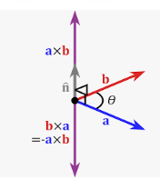
The cross product is not commutative!
Component wise multiplication:
The norm of the cross product is the area of the parallelogram generated by the two vectors.
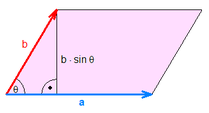
Triple Products
Gradient
Total Differential of a function \(T(x,y,z)\) :
\(dT=\left ( \frac{\partial T}{\partial x} \right )dx+\left ( \frac{\partial T}{\partial y} \right )dy+\left ( \frac{\partial T}{\partial z} \right )dz\).
The intuitive idea is that when we wiggle a little with x, y, z. How much will T wiggle?
From this we get to the gradient using the dot product:
\(dT=\left ( \frac{\partial T}{\partial x}\vec{e_x}+ \frac{\partial T}{\partial y} \vec{e_y}+\frac{\partial T}{\partial z} \vec{e_z}\right )\cdot(dx\, \vec{e_x}+dy\, \vec{e_y}+dz\, \vec{e_z})\).
Note that the dot product of a unit vector with itself is 1.
The first part will be defined as the gradient of T:
\(grad(T) = \triangledown T=\left ( \frac{\partial T}{\partial x}\vec{e_x}+ \frac{\partial T}{\partial y} \vec{e_y}+\frac{\partial T}{\partial z} \vec{e_z}\right )\).
using the Nabla Operator: \(\triangledown =\left ( \frac{\partial }{\partial x}\vec{e_x}+ \frac{\partial }{\partial y} \vec{e_y}+\frac{\partial }{\partial z} \vec{e_z}\right )\).
The gradient is a vector and so has a magnitude and a direction.
- \(\triangledown T\) points in the direction of maximum increase of T.
- \(\left| \triangledown T \right|\) gives the rate of increase along this direction.
Flux
Imagine a vector field (no vector field no flux), i.e. velocity vectors of flowing water. Now we want to know how much volume of water flows through a given area.
$$\bbox[10px,#073642,border: 1px solid white]{\Phi = \iint_{A}^{} \vec{v} \cdot \vec{df}}$$
Notes:
- The direction of the surface vector is in the direction of the flow. For closed surfaces it goes outwards.
- For a closed surface the flux tells us "how much" field is coming out of the enclosed volume.
- The flux is 0 when there are as many field lines going into a given volume as are going out of the volume.
Examples:
- Fluid Flow: \(\vec{v}\) is the speed, so we get \([\frac{m}{s}] \cdot [m^2]=\frac{m^3}{s}\) a Volume Flow.
- Wind
- Magnetic Flux: \[\Phi = \iint_{A}^{} \vec{B} \cdot \vec{df}\]
- Electric Flux: \[\Phi = \iint_{A}^{} \vec{D} \cdot \vec{df}\]
Divergence
Calculate the flux through a closed surface.
\[{\mathop{\rm div}\nolimits} \vec F = \nabla \centerdot \vec F = (\frac{\partial }{{\partial x}}\,\,\vec e_x + \frac{\partial }{{\partial y}}\,\,\vec e_y + \frac{\partial }{{\partial z}}\,\,\vec e_z)(F_x \vec e_x + F_y \vec e_y + F_z \vec e_z)\] \[= \frac{{\partial F_x}}{{\partial x}} + \frac{{\partial F_y}}{{\partial y}} + \frac{{\partial F_z}}{{\partial z}}\]
Two vectors can be multiplied using the dot or the cross product. So can the Nabla Operator. Doing that we get:
- Divergence \(\triangledown \cdot \vec{v}\)
- Curl \(\triangledown \times \vec{v}\)
Curl
\[{\mathop{\rm curl}\nolimits} \vec F = \nabla \times \vec F = \left| {\begin{array}{*{20}{c}}{\vec i}&{\vec j}&{\vec k}\\{\displaystyle \frac{\partial }{{\partial x}}}&{\displaystyle \frac{\partial }{{\partial y}}}&{\displaystyle \frac{\partial }{{\partial z}}}\\F_x&F_y&F_z\end{array}} \right|\]
Integrals
Line Integrals (of a vector field)
We have a vector function and a piecewise smooth path from point \(a\) to point \(b\). At each point along the path the dot product of the vector in this point and the displacement vector is calculated.
\[\int_{a}^{b} \vec{v} \cdot \vec{dl}\]
Famous example:
- Work done by a force: \(W = \int_{a}^{b} \vec{F} \cdot \vec{dl}\)
Notes:
- If the line integral is independent of the path, i.e. depends only on the endpoints \(a\) and \(b\), the field is said to be conservative.
Double Integrals
Volume below the graph of a function \(z=f(x,y)\).
We need to choose a Region R in the xy-plane.
\[R = \left[ {x_1,x_2} \right] \times \left[ {y_1,y_2} \right]\]
\[\iint_R f(x,y)\ dA\]
We cut R in small pieces \(\Delta A_i\) at position \((x_i, y_i)\). Then we take the sum of all those pieces multiplied with value of the function at that point (the volume of a small block below the function).
\[\sum_i f(x_i, y_i)\ \Delta A_i\]
Now we let \(\Delta A_i \rightarrow 0\). If the function \(f(x,y)\) is piecewise continuous in the region R the limit of the sum exists and is the same for all partitions.
In order to actually calculate these integrals we will reduce them to single integrals.
Imagine a plane i.e. parallel to the yz-plane cutting through the graph of \(z\).
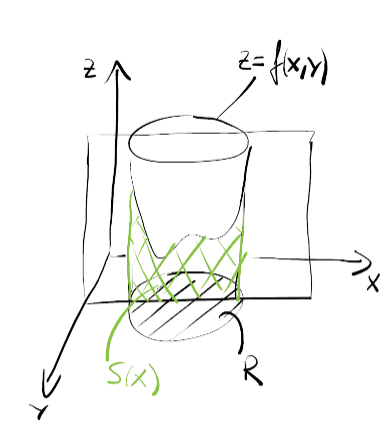
Each slice has an area \(S(x)\). To get a volume we calculate
\[V=\int_{x_{min}}^{x_{max}} S(x)\ dx\]
with
\[S(x) = \int_{y_{min}(x)}^{y_{max}(x)} f(x,y)\ dy\]
Note that the limits of integration depend on x.

\[\iint_R f(x,y)\ dA = \int_{x_{min}}^{x_{max}} \left [\int_{y_{min}(x)}^{y_{max}(x)} f(x,y)\ dy \right ] \tag{Iterated Integral}\]
Of course it also works the other way round.
Example 1 Paraboloid
\(z=1-x^2-y^2\)
Region:
- \(0 \leq x \leq 1\)
- \(0 \leq y \leq 1\)
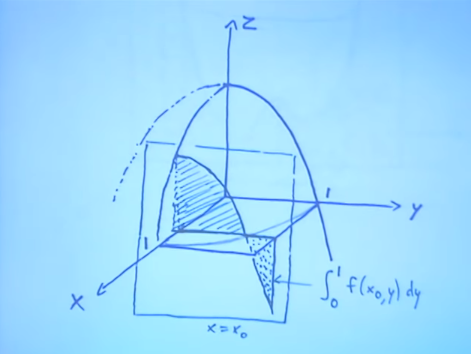
\[\int_0^1 \int_0^1 (1-x^2-y^2)\ dy\ dx =\]
\[\int_0^1 \left [y -x^2y-\frac{y^3}{3} \right ]_0^1 dx = \int_0^1 (1 - x^2 - \frac{1}{3})\ dx = \left [ \frac{2x}{3} - \frac{x^3}{3} \right ]_0^1 = \frac{1}{3}\]
Example 2 Paraboloid
This time we choose the region R to be a quarter circle. \(x^2+y^2 \leq 1\), \(x \geq 0\), \(y \geq 0\)
Now we have different integration bounds.
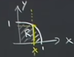
For given x, the range of y goes from 0 to \(y=\sqrt{1-x^2}\).
\[\int_0^1 \int_0^{\sqrt{1-x^2}} (1-x^2-y^2)\ dy\ dx =\]
\[\int_0^1 \left [y -x^2y-\frac{y^3}{3} \right ]_0^{\sqrt{1-x^2}} dx = \int_0^1 (\sqrt{1-x^2} - x^2 \sqrt{1-x^2} - \frac{(1-x^2)^{3/2}}{3}) dx =\] \[\int_0^1 (\sqrt{1-x^2}\ (1-x^2) - \frac{(1-x^2)^{3/2}}{3}) dx = \] \[\int_0^1 (\sqrt{1-x^2}\ (\sqrt{1-x^2}\ \sqrt{1-x^2}) - \frac{(1-x^2)^{3/2}}{3}) dx = \] \[\int_0^1 (\frac{2}{3}\ (1-x^2)^{3/2}) dx\]
Substitution: \(x=sin(\theta)\), then \((1-x^2)^{1/2} = cos(\theta)\)
\(dx = cos(\theta)\ d\theta\)
Then the integral becomes
\[\int_0^{\pi/2} \frac{2}{3}\ cos(\theta)^4 d\theta\]
With
\[cos(\theta)^2 = \frac{1+cos(2\theta)}{2}\]
this becomes
\[\frac{2}{3}\ \int_0^{\pi/2} \left (\frac{1+cos(2\theta)}{2} \right)^2 d\theta = \frac{2}{3}\ \int_0^{\pi/2} \left (\frac{1}{4} + \frac{1}{2} cos(2\theta) + \frac{1}{4} cos(2\theta)^2 \right ) d\theta =\]
Using the above formula again
\[\frac{2}{3}\ \int_0^{\pi/2} \left (\frac{1}{4} + \frac{1}{2} cos(2\theta) + \frac{1}{8} + \frac{1}{8} cos(4\theta) \right ) d\theta = \frac{\pi}{8}\]
Changing Bounds
Triple Integrals
Here we have a function \(z=f(x,y,z)\) and a 3-D-region R.
\[R = \left[ {x_1,x_2} \right] \times \left[ {y_1,y_2} \right] \times \left[ {z_1,z_2} \right]\]
The region will be cut into small boxes. In each box we choose a point \((x_i, y_i, z_i)\) and then we sum the product of the box-volumes and the function value at the chosen point.
\[\sum_i f(x_i, y_i, z_i)\ \Delta V_i\]
Now we let \(\Delta V_i \rightarrow 0\). If the function \(f(x,y,z)\) is piecewise continuous in the region R the limit of the sum exists and is the same for all partitions.
Surface Integrals
Volume Integrals
Gauss's Theorem (Divergence)
Volume -> Boundary Area
$$\bbox[10px,#073642,border: 1px solid white]{\int_{V} div(\vec{E})\ dv = \int_{V} (\nabla \cdot \vec{E})\ dv = \oint_{A} \vec{E} \cdot \vec{df}}$$
Stokes' Theorem (Curl)
Surface -> Boundary Line
$$\bbox[10px,#073642,border: 1px solid white]{\int_{A} rot(\vec{E}) \cdot \vec{df} = \int_{A} (\nabla \times \vec{E}) \cdot \vec{df} = \oint_{S} \vec{E} \cdot \vec{dl}}$$
Experiments and Effects
Millikan Experiment (1910)
Measurement of the elementary charge of the electron. Oil drop experiment, showing that charges are integer multiples of a certain fundamental quantum.
Elementary Charge: \(e=1.6021766208(98)\ 10^{-19} C\)
Tolman Stewart Experiment (1916)
A rapidly rotating coil is instantly stopped. Due to the mass of the electrons in the metal a potential difference can be measured.
Rowland Experiment (1875)
Shows that a rotating charged plate generates a magnetic field.
Faraday Effect
Also called Faraday rotation. Magneto-optical effect between light and a magnetic field in a medium.
BCS - Effect (1957)
(Bardeen, Cooper, Schrieffer) The BCS-Theory is the first microscopic theory of superconductivity.
Circuit Elements
Capacitor and Inductor
| Capacitor | Inductor | |
|---|---|---|
| Definition | \(L:=\frac{\Psi}{i}=\frac{N\cdot \phi}{i}\) | \(C:=\frac{Q}{u}\) |
| u-i | \(i=C\cdot\frac{du}{dt}\) | \(u=L\cdot\frac{di}{dt}\) |
| u-i | \(I=U \omega C \ (X_C = \frac{1}{\omega C})\) | \(U=I \omega L \ (X_L=\omega L)\) |
| Energy | \(W_C=\frac{1}{2}\cdot C\cdot u^{2}\) | \(W_L=\frac{1}{2}\cdot L\cdot i^{2}\) |
System Theory
Digital Filters
Finite Impulse Response (FIR) Filters
The response to a finite input sequence is also finite (settles to 0).
A FIR-Filter of order n is just the weighted sum of the past n input values.
$$\bbox[10px,#073642,border: 1px solid white]{y_n = b_0 \cdot x_n + b_1 \cdot x_{n-1} + \dots + b_1 \cdot x_{n-N}}$$

Notes:
- \(y_n\) doesn't depend on any prior \(y_i\) (difference to IIR-Filters).
Infinite Impulse Response (IIR) Filters
The response to a finite input sequence might be infinite. This is due so internal feedback.
A IIR-Filter also has feedback, i.e. it's output also depends on past \(y_i\).
$$\bbox[10px,#073642,border: 1px solid white]{y_n = \sum_0^P b_i \cdot x_{n-i} -\sum_1^Q a_i \cdot y_{n-i}}$$